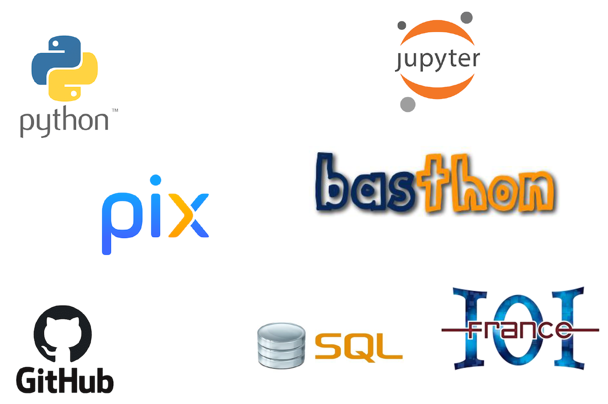
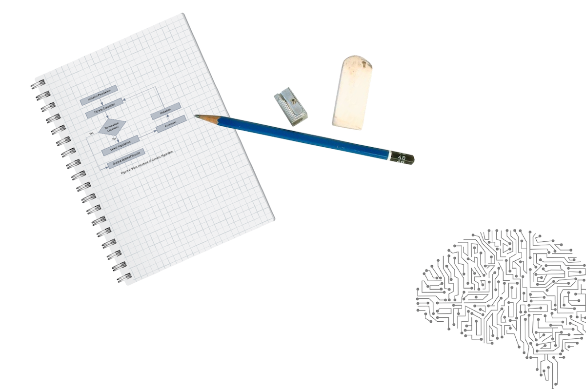

Numérique et Sciences Informatiques Première
Bienvenue dans votre espace d'apprentissage de NSI. Sélectionnez un chapitre ci-dessous ou dans le menu de gauche pour commencer.
Bienvenue dans votre espace d'apprentissage de NSI. Sélectionnez un chapitre ci-dessous ou dans le menu de gauche pour commencer.
« Dans la nouvelle économie, l’informatique n’est plus une connaissance optionnelle. C’est une compétence basique, comme la lecture, l’écriture et l’arithmétique. »
Barack Obama, 2016
Programme de l'enseignement de spécialité de NSI
Bulletin officiel de l'éducation nationale spécial n°1 du 22 janvier 2019
Cet enseignement s’appuie sur quatre concepts fondamentaux :
À ces concepts s’ajoute un élément transversal : les interfaces qui permettent la communication avec les humains, la collecte des données et la commande des systèmes.
En classe de première, le programme de NSI est découpé en 7 chapitres :
Un chapitre Histoire de l'informatique s'ajoute à ceux-ci mais il sera traité de manière transversalle tout au long des cours de première et terminale.
Un enseignement d’informatique ne saurait se réduire à une présentation de concepts ou de méthodes sans permettre aux élèves de se les approprier en développant des projets applicatifs.
Une part de l’horaire de l’enseignement en classe de première doit être réservée à la conception et à l’élaboration de projets conduits par des groupes de deux à quatre élèves.
4 heures de cours répartis en 2 blocs de 2 heures
La majorité des cours et TP se font sur machine, il n'y a pas de répartition standard de ces 4 heures entre les cours et les TPs, les cours contiendront des exercices de compréhension et peuvent s'étaler sur 1/2 séance (1h) ou plusieurs séances (2 x 2 heures) les TPs s'étalent souvent sur une séance (2h).

Mais aussi...

Tous les cours et TP de cette année seront disponibles en ligne sur Github à l'adresse https://github.com/abrugiere/1nsi sous forme de Notebooks Jupyter.
Jupyter Notebook est un environnement de programmation interactif permettant de créer des document intitulés "notebooks". Il s'agit de documents se présentant sous la forme d'une succession de cellules qui peuvent contenir du code Python, du texte brut, des formules mathématiques, des graphiques ou encore du texte mis en forme grâce au langage markdown. Les notebooks possèdent généralement l'extension .ipynb.
Pour utiliser les notebooks Jupyter il faut généralement installer le logiciel sur son ordinateur, cependant il existe un outil en ligne appelé Basthon (Basthon est l'acronyme de "bac à sable pour python", c'est une allusion à la lutte que peut parfois représenter l'apprentissage de la programmation) qui nous permettra d'utiliser les notebooks sans rien installer et quelque soit notre plateforme (PC, mac, Linux, tablette...)
L'accès au site se fait à l'adresse https://basthon.fr en choisissant le mode Notebook (un mode Console existe aussi à la manière de l'environnement IDLE également disponible au lycée)
En cas de panne du site Basthon, Jupyter propose un éditeur en ligne de Notebooks à l'adresse https://jupyter.org/try-jupyter/lab le notebook peut être ouvert en utilisant le bouton "Upload files" pour charger votre fichier.
Comme le HTML, le markdown est un langage qui permet de mettre en forme du texte en utilisant des balises.
Contenu du chapitre 2 à venir...
Contenu du chapitre 3 à venir...
Contenu du chapitre 4 à venir...
Contenu du chapitre 5 à venir...
Contenu du chapitre 6 à venir...
Contenu du chapitre 7 à venir...